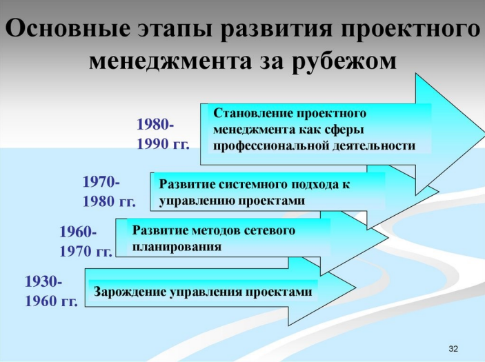
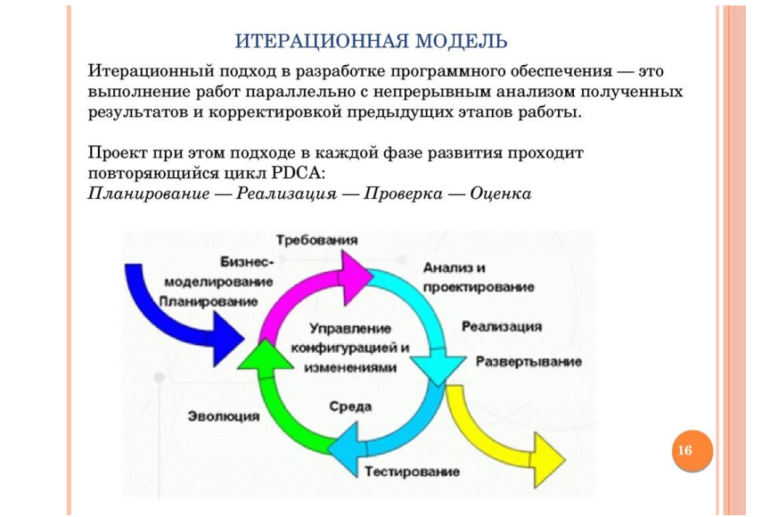
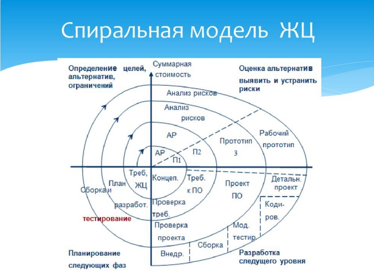
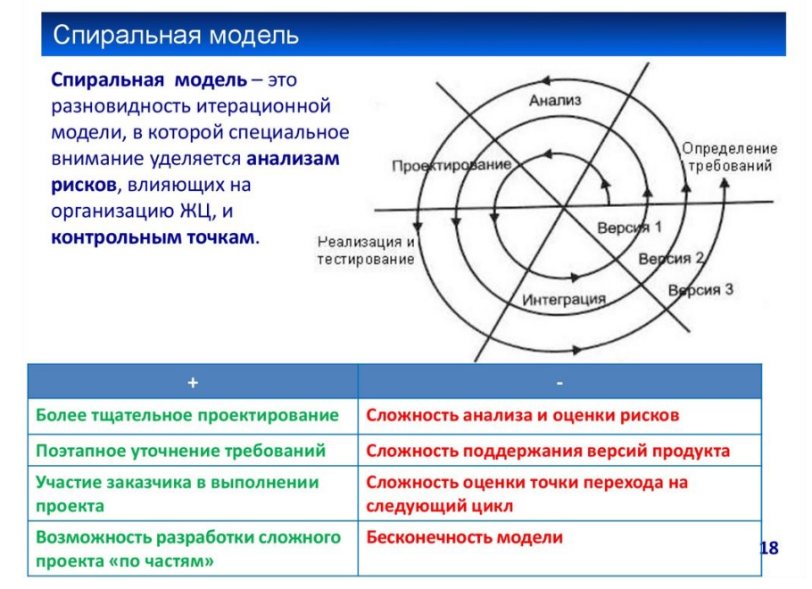

Исторические аспекты развития технологий проектирования информационных систем. История разбития методологий проектиробания (программной инженерии).

В теории показать и обосновать исполнение в соответствии с требованиями искусства и целесообразности.
В практическом смысле — выполнение руками человека работ из любого материала по данному чертежу.
Однако история развития проектного менеджмента как дисциплины относительно молода: ее относят к 30-м годам ХХ века и связывают с разработкой специальных методов координации инжиниринга крупных проектов в США - авиационныхв «US Air Corporation» и нефтегазовых в фирме «Ехоп».

В СССР в этот же период начала развиваться теория и практика поточной организации работ по реализации крупных строительных проектов.
История развития проектного менеджмента в России
- 1931 г. — в Москве, Кузбассе и Ленинграде поточным методом успешно возведены кварталы серийных жилых домов,
- 1963-1967 гг. — начало применения методов сетевого планирования в строительстве,
- 1975 г. — количество строек, применявших методы сетевого планирования и управления, составило 17-180/0 их общего числа;
- 1995 г. — образование российской ассоциации управления проектами (СОВНЕТ)
Появление новой дисциплины

Середина прошлого столетия ознаменовалась началом активного развития информационных технологий. Прежде всего, военные ведомства и передовые предприятия многих стран понимают важность и ценность создания и развития информационных систем. С появлением вычислительной техники обработка больших объемов информации и автоматизация основных производственных процессов и органов управления на всех уровнях становятся наиважнейшей задачей для обеспечения военного превосходства наиболее развитых государств и конкурентных преимуществ коммерческих компаний. Разработчики национальных и крупномасштабных информационных систем стали первыми осознавать необходимость создания специальных средств проектирования и моделирования бизнес-процессов, позволяющими сделать их работу более эффективной и сократить не только сроки создания информационных систем, но минимизировать ошибки. Ошибки и неточности встречаются постоянно, чем раньше они диагностируется и локализуются, тем меньше стоимость переделки. Известно, что стоимость выявление и устранение ошибки на стадии проектирования в два раза обходится дороже, на стадии тестирования информационной системы в десять раз, а на стадии эксплуатации в сто раз, чем на стадии анализа бизнес-процессов и разработки технического задания.
Когда нет продуманного и четкого технического задания

При создании сложных информационных систем зачастую очень трудно понять требования персонала заказчика. Они могут быть сформулированы некорректно, а в процессе анализа конкретных бизнес-процессов даже измениться. Поэтому появление методологий современного проектирования и моделирования информационных систем было насущной задачей, над которой работали специалисты разных стран.
1960-1970 гг.
1930-
1960 гг.
Программная инженерия
(1968-2011)
- определяет объекты (модули, компоненты, аспекты и др.) и операции над ними» объединяющиеся в целостный технологический процесс создания программного продукта;
- обобщает накопленный опыт программирования и отражает закономерности развития технологии программирования, Расширяет содержание понятия
Программирование“ путем привлечения понятийного аппарата инженерных дисциплин;
- является инженерной Дисциплиной, охватывающей все аспекты создания программных продуктов, начиная с формулирования требований, кончая сопровождением и снятием с эксплуатации, а также включает инженерные метоДы управления проектами и оценивание трудозатрат, стоимости и качества изготовления программных продуктов,
Инженерная деятельность по всем аспектам изготовления ПП планируется и декомпозируется на отдельные работы, распределяющиеся по разным категориям исполнителей,
«Waterfall Model»
(каскадная модель или «водопад»)
- Когда требования известны, понятны и зафиксированы. Противоречивых требований не имеется.
- Нет проблем с доступностью людей нужной квалификации.
- В относительно небольших проектах.

Спиральная модель

Интерационная модель

Подробнее о методологиях
Традиционные методологии построены на последовательном выполнении всех фаз проекта, и конечный продукт будет получен только после выполнения всех этапов. Возвращение на предыдущий этап не предусмотрено и при появлении критических ошибок весь проект начинается сначала. Основным примером таких методологий разработки является каскадная модель или модель Водопад.

Данная модель внесла фундаментальный вклад в понимание процессов разработки ПО следующими утверждениями:
процесс должен подчиняться дисциплине, разумному планированию и управлению; реализация продукта должна быть отложена до полного понимания целей этой реализации.
Спиральная модель стала следующим (после водопадной) этапом развития методологий разработки, поскольку она решает основную проблему каскадной модели.

Спиральная модель

Итеративная модель предполагает разбиение жизненного цикла проекта на последовательность итераций, каждая из которых напоминает ”мини-проект” , включая все фазы жизненного цикла в применении к созданию меньших фрагментов функциональности, по с авнению с п оекгом, в целом.


Общая концепция DevOps заключается в усилении кооперации между группами разработки (DEVelopments) и эксплуатации (OPerations) в рамках одной организации, несущими ответственность за разработку ПО. Данная методология это без преувеличения новый виток эволюции методологий разработки, поскольку ориентирована не только на удовлетворение требований заказчика в жестко определенные сроки, но и повышение качества и стабильности продукта.